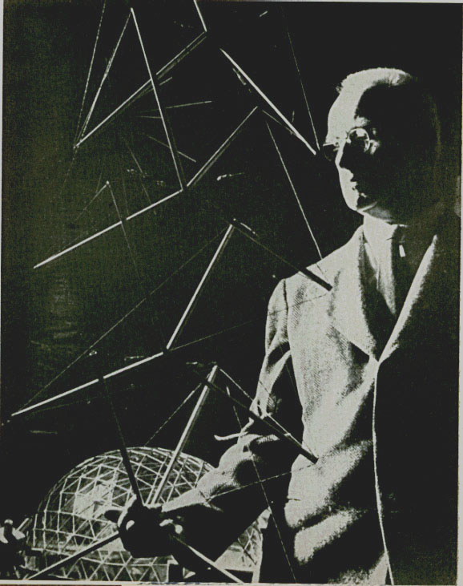

This paper appeared in Portfolio and Art News Annual, No.4, 1961. In addition to this article there is an accompanying Introduction by John McHale. Only the Tensegrity article is reproduced here by permission of the Estate of R. Buckminster Fuller.
An attempt has been made to re-produce the illustrations contained in the article. It is clear that I have had varying degrees of success. Please see the original article for the full sized, and possibly clearer, illustrations.
In order to make this document load quickly, I have removed all the figures and placed them in separate files. To view a figure, click on the underlined figure reference in the text. To view all the figures sequentially, click here. Note that R.B.Fuller does not reference all the figures in his text. Therefore, to view all the figures you will need to view them in the sequential manner just mentioned.
The following two photographs are
Copyright 1960 Allegra Fuller Snyder
Courtesy, Buckminster Fuller Institute, Santa Barbara.
All other figures are
Copyright 1961 Allegra Fuller Snyder
Courtesy, Buckminster Fuller Institute, Santa Barbara.
For more information about the work of Buckminster Fuller contact:
The Buckminster Fuller Institute, 2040 Alameda Padre Serra,
Suite 224, Santa Barbara, CA 93103. PH: (805) 962-0022.
Architect, engineer and cosmologist R. Buckminster Fuller [BELOW] and [Following] three of his basic structures: Tensegrity mast, Geodesic dome, octet truss in the Fuller exhibition, Modern Museum, N.Y.
It is commonly overlooked that the patrons of architects, engineers and professional craftsmen are inherently the prime designers of their projects. Theirs is the conceptioning, the will to do, the initiative and the statement of limits. Conceivers of great industries and their trans-national patterning have been the large pattern-designers of the last world century. Those who have been successful world-industry designers have also been powerful anarchistic authorities.
In this last century many conceivers and concept-explorers have been unwilling to submit to patronage lest the patron compromise the potentials of their conceiving. Under the powerful economic network woven by the major industrial conceivers, economic survival was difficult for the untamed artists--for this they were.
In the long evolution of fundamental rights of men and the slow inhibition of these rights into the securing codes of society, the letters patent issuable to individuals who, on their own initiative, succeed in augmentation of the commonwealth have been common to all manner of governments. Absolute monarchs and republics have alike honored their individuals with temporary monopolies to replenish and regenerate their creative resources. Patents are operative in Russia and behind the Iron and Bamboo Curtains; patents are operative in the Western world. Patents are not operative, however, between these two world domains.
Amongst other fundamental experiments which I have been conducting over the last forty years has been the testing of whether the individual may achieve original formulations and initiate their realization in world economic patterning without either the compromising direct patronage or politically-seized dictatorial power. It seemed that the only possibility of so doing lay in the direction of patents secured entirely through the inventor's own economic means. Because I have been fortunate enough to have been befriended by many artists of extraordinary individual and original conceptual initiative, and because I have had the further good fortune to have gained long-time experience, not only in patent-law, but in patent-securing, -maintenance, and the broad economic ramifications of patent-holding in the most recent era of massive government and massive corporation (made more difficult by the shroud of official secrecy embracing the unprecedented technical acceleration of our era), I am eager to discuss the economic security of the artists and their potential joining of forces, as did the medical profession long ago, in the advantageous realizations for world democracy inherent in the artist-joined anticipatory competence.
It is a sad fact that the world of patronized design is the last area of commonly accepted social behavior where piracy is considered ethical. Patrons hire designers to steal their competitors' work. Patrons hire designers to steal other non-professional designers' fresh-new crops of potential economic growth. Only by joining forces will the architect-, scientist-, engineer-artists be able to eliminate this intellectual cancer of the regenerative processes.
I am going to discuss a special case of structural exploration and invention. This published discussion constitutes what is legally called "public disclosure" of an invention which I have "reduced to practice," which latter reduction puts me by common law in the powerful position of holding momentary monopoly of the economic employment thereof. I have fortified this common-law position with patents already obtained, as well as patent applications in process. I fortunately hold several patents covering geodesic structures in America and in almost every other country in the world which subscribes to the Berne (Switzerland) patent convention. If I did not have this patent protection, I am confident that neither the government nor any of the great industrial corporations would in any way have recognized my invention of these structures. Though big government has spent billions in noneffective structural research, I frequently encounter the statement by government and corporation bureaucrats that they consider it their duty to the taxpayer to use their enormous powers of specification and purchase to circumvent my patents covering structures which I had anticipatorily invented at my own expense and developed to satisfy society's needs under just such emergent necessities as those confronting the bureaucrats. The basis of their contention is that the few thousands of regenerative dollars that may be returned to me represent an immoral exploitation by the individual of democracy's emergency needs. They completely overlook the billions of taxpayers' dollars they have already fruitlessly spent in their intra-mural budgetary politics, attempted under the supposition that they will be rewarded by their incumbent masters if they can stretch yesterday's investments to cover tomorrow's evolutionary transformations. How can they justify large research and development budgets for next year if it were visible that the original technical gains were accruing exclusively to society from the individual preoccupations and initiatives existing entirely outside of massive government and massive corporate manufacture and distribution? The self-deceit of democracy at this moment in history by its professionally advertised aggrandisement of the "corporate image" with reputed impeccability of super-inventiveness may be the undoing of democracy's case until another century has washed away this miasmic fallacy. Not only have these professional word- and picture-factories manufactured the greatest and most persuasively erroneous myths, but they also have robbed our heritage of word- and picture-language of its incisively exquisite effectiveness. The primary tools of men have been blunted and misappropriated. Bereft of the age-long developed tools, artists of our day have sought for new and vital means of communication. The beatnik is the anti-body of Madison Avenue. The true artists seek escape from the stale-mated vacuum of the two. History tells us that they will probably be successful. The probability is that the artists will win enjoyment of our whole earth by all the world's people--with the complete emancipation of man's innate freshness and regenerative conceptioning.
One cannot patent geometry per se nor any separate differentiated-out, pure principle of nature's operative processes. One can patent, however, the surprise complex behaviors of associated principles, where the behavior of the whole is unpredicted by the behavior of the parts, i.e. synergetic phenomena. The latter is what is known as an invention, a complex arrangement, not found in nature, though sometimes superficially similar to nature. Though superficially similar in patternings to Radiolaria and Flies' Eyes, geodesic structuring is true invention. The Radiolaria collapse when taken out of water. Flies' Eyes will not provide structural precedent or man-occupiable structures.
The processes of engineering, up to the moment of introduction of my invention of Geodesic structures, are predicated upon the stress analysis of individual beam and column behaviors, as separate components and thereafter upon comprehensively organized beams, columns and cantilevers as a solid compressional over-all integrity of cohesion, aided here and there by tensionally exaggerated sinews--tension being subordinate and local. Therefore, engineering as academically constituted in 1951 could in no way predict the associated behaviors of Geodesics, in which any one, several or many of the components could be removed without, in any way, jeopardizing the structural integrity cohesion of the remaining primary structure.
I have visited approximately all the leading universities and engineering schools in the U.S.A. (only as their spontaneously invited guest, as I allow no promotion or agentry solicitation of engagements ), and I have been a guest of major architectural and engineering societies around the world. I am able to state from the direct testimony of its leaders, that world engineering not only was surprised by the Geodesic behavior but clearly stated that it was unable to explain or predict the unprecedented performance per pound efficacy of the geodesic structures by any of the academically known mathematical principles of analysis. In lieu of an extant and proven theory of Geodesics and their stress analysis strategies, engineers professionally charged with the responsibility of validating my (or my companies') Geodesic dome undertakings have only one recourse, and that is to direct static load testing accompanied by progressive electric strain gauge readings with loading carried through to "failure." Thereafter, formulas are derived, which do not provide any general theory but only special knowledge concerning this particular case. However, I do enjoy a lucid theory of geodesic structuring which I have frequently reduced to successful practice in technical, economic and industrial ways.
For these reasons I have had to develop a completely new strategy of educational exposition of synergetic behaviors.It is because I have developed the Geodesic theory and not only the invention but this effective strategy of exposition, that I am, and have been, invited to conduct original seminars in the primary educational institutions around the world, as well as before the important annual professional conventions of primary engineering-architectural bodies of these countries.
Whereas, engineers told me, before my full-scale demonstrations of Geodesic structures, that Geodesics would not work; now, after one-third of a century of expositional engagements and discourse, there has been produced altogether such an effect upon the general climate of technology that Geodesic componentation is frequently employed by others with satisfactory structural results, though the individuals do not know why. This occurs because of a subconsciously-marshaled approach of the design factors generated by hundreds of news photographs of successfully standing structures, ranging from desk models [Figs. 1 and 2] to the largest clear-span enclosures of all history. Many of these are shown being flown to installation sites, some of which are at the world's formidable polar,mountain and desert regions.
All these Geodesic events were news items simply because they were synergetic surprises, ergo contrary to the obvious. Copied geodesic ventures in higher modular frequency of triangular Geodesic subdivisioning, or other less symmetrical employments of the Geodesic structural integrity than I have as yet undertaken, do not constitute invention.Nor does the variation warrant exemption from the temporary economic authority granted to me as a patent.
There have been recent news references to structures which I have designed for firing to the Moon. Six hundred pounds is the approximate weight of my thirty-six foot diameter sphere self-openable from a thirty-six inch diameter ball. There can, and probably will, be much larger units, which I will discuss later in this disclosure. Of first interest to engineers and artist-conceivers is the fact that my potential prototypes of satellite- and moon-structures are tensional integrity, omni-triangulated, high-tensile-cabled, spherical nets in which local islands of compression act only as local sprit-stiffeners. The local stiffeners are so oriented that they angle inwardly and outwardly between comprehensively finite, exterior and interior, tensional, spherical nets, thus producing positive and negative waves of action and reaction in inter-stabilized dynamic equilibrium.
Recourse to this discontinuous-compression, continuous-tensioning structure was not obvious to man, therefore the following needs to be observed.
Whereas compression members have an inherent limit ratio of section diameter to length [Fig. 10], tension members have no inherent ratio of section diameter to length. The Greeks, who built entirely in compression, discovered that a stone column's slenderness ratio was approximately 18 to 1 of length to diameter. Modern structural steel columns with an integral tensional fibering unpossessed by these stone columns have a limit slenderness ratio of approximately 33 to 1.
If we have better metallurgical alloys, we can make longer and longer tension members with less and less section--apparently ad infinitum, but not longer compression columns, ad infinitum.
What interested me back in 1927, regarding the limitless ratios of tensional slenderness,was whether we were trending toward bridges which had infinite length and no section dimension at all, or whether this was a nonsensical question. As a sailor I looked spontaneously into the sky for indicated clues. I found myself saying, "It is very interesting to observe that the solar system, which is the most reliable structure that we know of, is so constituted that the earth does not roll around on Mars as would ball bearings [Fig.3], which is to say that the compressional components of celestial structures are astro-islands spatially remote from one another and they are each shaped in the most ideal conformation for highest compressional-structure effectiveness which is the approximately spherical shape. In the spherical condition any aspect of a compressional system is its neutral axis, that is the sphere has an infinity of axes. All other spheroidal (cigar, turnip, egg, potato or spider) shapes [Fig. 4] have only one most neutral axis. This is why spherical ball bearings are the most ideal compressional system structures of man's devising, as they continuously shift their loads while distributing the energetic effects to the most parts in equal, ergo relatively miniscule shares in the shortest time.
I saw that those astro-islands of compression of the solar system are continuously controlled in their progressive repositioning in respect to one another by comprehensive tension of the system which Newton called "gravity." This effective coherence between island-components varied in respect to their relative proximities and masses, in ratio gains and losses of the second power in respect to the dimensional distance, as stated in the terms of radius of one of the component bodies involved.
I then switched my observation from the macrocosmic to the microcosmic and witnessed that man's probing within the atom disclosed the same kind of discontinuous-compression, continuous-tension apparently governing the atom's structure. That is, the islands of energy concentration of the atom and its nucleus were extraordinarily remote from one another in respect to their measurable local energy concentration diameters,and all were bound together by a comprehensive but invisible tensional integrity.
As a consequence of these macro-, micro-struoural reminders, it seemed to me, in 1927, appropriate to ask also whether man, who obviously tended to think only of a solid, brick-on-brick, pile-up law as governing all fundamental forms of structural modifications, i.e., formal, local alterations of the "solid" compressional earth's crust, was congenitally limited to "solid" structural conceptioning, and could therefore never participate in the far more efficient structural strategies evidenced in his (only instrumentally harvested) infra- and ultra-sensorial data of universal patterning. I also saw that man had long known of tensional structures, and had experienced and developed those tensional capabilities but apparently only as a secondary accessory of primary compressional structuring. For instance, he inserted a solid mast into a hole in "solid" earth and rammed it in as a solid continuity of the unitary solid earth [Fig. 5]. However, to keep it from blowing over and breaking off when hurricanes raged, he added a set of tension stays triangulated from the top of the masthead to the ground, thus taking hold of the extreme end of the potential mast-lever at the point of highest advantage against motion. But these tensions were secondary structuring actions. So also were they secondary adjuncts in his solidly built compressional-continuity ships. To man, building and earth were alike, compressionally continuous. Compression was that "realistically hard core" that he loves to refer to, and its hard reality was universal, ergo comprehensive.
It followed that tension must be secondary, and local, in all his thoughts, ergo in all his philosophic reasoning. As a consequence, popular conception of airplane flight was, at first, and for a long time, erroneously explained as a compressional push-up force operating under the airplane's wing. It "apparently" progressively compressed the air below it as a ski compresses the snow into a grooved track of icy slidability. The scientific fact remains, as tunnel experiments proved, that 75% of the airplane's weight support was furnished by the negative lift of the partial vacuum created atop the air-foil. This is simply because, as Bernoulli showed, it was a longer way for the air to go around the top of the foil than under the foil, and so the same amount of air in the same amount of time had to be stretched thinner, ergo, vacuously over the top It seemed to me that this stretching thinner, and its concomitant greater effectiveness of inter-positioning of bodies (the plane in respect to earth ), was our same friend, the astro- and nucleic tensional integrity of dynamic interpatterning causality.
As I wondered whether it was now possible for man to inaugurate an era of thinking and conscious designing in the terms of comprehensive tensions and discontinuous compressions, I saw that his structural conceptioning of the wire wheel documented his intellectual-designing break-through into such thinking and structuring That is, the compressional hub of the wire wheel was clearly islanded or isolated, from the compressional "atoll" comprising the rim of the wheel [Figs. 6 and 7]. As these compressional islands were only interpositioned in structural stability by the tensional spokes, I said that this was dearly a tensional integrity, where tension was primary and comprehensive and compression secondary and local. This reversed the historical structural strategy of man. His first wire wheel had many and varied numbers of spokes. I probed mathematically for generalized laws which might govern this tensional integrity and sought for experimentally proven knowledge governing the minimum number of spokes necessary to wire wheel stability. I found that 12 was the minimum number of spokes. Man had used m ore, in providing a lightweight wheel, as stays for the frequent support of the resultingly slender rim.
Thus I found a mathematics of natural coordination fundamentally governing the universally constant and alternate minimum of 12 unique vectors of freedom, each of equally minimum energy involvement. Out of the 12 vectors of unique and alternate freedoms of nature's fundamentally accommodating coordinations, there emerged a comprehensive hierarchy of entirely rational mathematical relationships apparently governing all known fundamental transformation behaviors of nature. I named this body of mathematical relationship discovery "Energetic and Synergetic Vectorial Geometry.-' Out of the comprehensive ramifications of Energetic and Synergetic Vectorial Geometry came the eventual, not only to design discontinuous compression structures, and to comprehend in direct, consciously-conceived patterning the gamut of orderly transformal strategies used by nature in her array of evolutionary designing, which also proved to be everywhere the most economically accommodating to the inherently diverse local effects of the sum total universal coordinations, and respective progressions, of local energy investments.
As I considered the 12 unique vectors of freedom constantly and non-redundantly operative between the two poles of the wire wheel, its islanded hub and its also islanded equatorial rim-atoll--in effect a milky-way-like ring of a myriad of star islands encircling the hub in a plane perpendicular to the hub axis--I discerned that this most economic arrangement of forces might also be that minimum possible system of nature capable of displaying stable constellar compressional discontinuity and tensional continuity--a one island system of compression would be an inherently continuous compression system with tension playing only a redundant and secondary part. Therefore, a one island system may be considered only as an optically illusory "unitary" system, for, of course, at the invisible level of atomic structuring, the coherence of the myriad atomic archipelagos of the "single" pebble's compression-island's mass is, sum totally, and only provided by comprehensively continuous tension.
This fact was invisible to and unthought of by historical man up to yesterday. Before this mid-twentieth century fact discovery, there was naught to disturb, challenge or dissolve his "solid-rock," and other "solid things" thinking. "Solid thinking" is as yet comprehensively popular and is even dominant over the practical considerations of scientists in general and even over the everyday logic of many otherwise elegantly self-disciplined nuclear physicists.
Tension and compression are inseparable and coordinate functions of structural systems, but one may be at "high tide" aspect, i.e. most prominent phase, white the other is at "low tide," or least prominent aspect, or phase, e.g., a visibly tensioned rope is compressively contracted in almost invisible increment of its girth dimensions, everywhere along its length. This low-tide aspect of compression occurs in planes perpendicular to its tensed axis. Columns which ate visibly loaded only, by weights applied to their respective top ends are easily seen to have their vertical axis in compression, but invisibly the horizontal girths of these columns are also in tension, as the result of a cigar-shaped swelling pattern of forces acting in the column at right angle to its loaded axis, which tends, invisibly, to transform toward the shape of a squash or a banana. As a result of the visible, or high-tide, vertical compressioning aspect of such axial loading of the column's system, this swelling force imperceptibly stretches, or tenses, the column's girth as a low-tide reciprocal function of the overall structural integrity reciprocity.
These vectorial resultants of forces articulated in planes perpendicular to the axis of the applied force vector, with concomitant right angle transformation of compression in to tension and vice-versa, are altogether known as the Poisson Effect ( as named for their human discoverer and not for a fish-like behavior). We now know that this imprecisely recognized reciprocal effect is a precisely operative physical system phenomenon known as PRECESSION. (See my explanation of precession in the Sperry Story in Fortune, May 1940.)
Precession plays the major role in my re-statement of the first law of motions, which says "The entire regenerative hierarchy of major, intermediate, and minor constellations of component patterns-within-component-patterns of universe are continual processes of synchronous, yet independent and unique, transformative patternings. That is, all components of universe are in continually accommodative, associative-disassociative motion reciprocity, and all the moving components of universe continuously affect all the other moving components--in varying degrees, ranging between high and low tide reciprocities of critically intense to critically negligible. All of these inter-effects of all the motional components upon one another are precessional, and precession always produces transformative resultants in vectorial patterns which always articulate angular accelerations in directions other than the 'straight' lines of directions between the inter-effective components." This is to say that the effects of all local motion systems in the universe upon one another are always precessional, and that none of the resultants of any forces operative between them are ever straight line patterns. Individual lines of vectorial trajectory interactions never go through the same points. They diverge periodically to innocuity of inter-effectiveness, or they periodically converge to critical proximities. Their local interferences, through critical proximity, produce reflections, refractions and regenerative-shunting patterns.
Absolutely straight lines or an absolutely flat plane would, theoretically, continue outwardly to infinity. Intellectual comprehension occurs when patterns of experience return upon themselves in all directions. The difference between infinity and finity is governed by the taking of angular sinuses, like pieces of pie, out of surface areas a round a point in an absolute plane. This is the way lamp shades and skirts are made. Joining the sinused fan-ends together makes a cone; if two cones are made and their open, ergo infinitely trending, edges are brought together, a finite system results. It has two polar points and an equator. These are inherent and primary characteristics of all finite systems. Man has employed the convention of subdividing the unity of encirclement around a point into 360 degrees, formed by the sum of the radial segmentations around a point in an absolute plane. If we call 360 degrees "unity," I may state my discovery of the law of systems as follows: if we subtract the sum of the convergent angles around all the vertexes of any system from the numbers of vertexes times 360 degrees, the difference will always be 720 degrees, which is exactly two times unity; this is to say that the difference between infinity and finity is always exactly 2. This law explains many of the previously uncomprehended aspects of topology [Fig. 8]. Its philosophic implications are startling.
The compressively interprecessional cooperative and accommodative functionings of all structural systems are locally persistent constellations of resultant force-vectors, which are always angularly shunted, and regeneratively re-shunted, inwards of the system's tangential lines, i.e., at resultant angles less than 180 degrees in respect to the direction of origin of the generative force. In the high and low tide cooperative precessional functionings of tension vs. compression I saw that there are times when each are at half tide, or equally prominent in their system relationships. I saw that the exterior of the equatorial compressional island rim atoll of the wire wheel must be cross-sectionally in tension a s also must be its hub island's girth. I also saw that all these tension vs. compression patterning relationships are completely reversible, and are entirely reversed as when we considered the compressively spoked "artillery wheel" vs. "the tensional spoked wire wheel."
I followed through with consideration of these differentiable, yet complementarily reversible, functions of structural systems as possibly disclosing the minimum, or fundamental set of differentiability of non-redundant, precessionally regenerative structural systems.
Employing that concept as an hypothetical verity or working premise for further probing, I observed that whereas there existed a limit to slenderness ratio (as already noted) of a compression member's girth diameter in respect to its longitudinal axis length, no such limit slenderness ratio characterized tensional dominated structural components. Astronomical magnitudes of structural system coherence are accomplished by tensionally dominated structural functions of zero slenderness ratio, i.e. by gravitational functioning. I also noted that compressionally dominated structural components tend toward contour transformation in which the radius of curvature steadily decreases under axial loading, that is the cigar shaped column forces tend toward "squash-" or "banana"-like bending of their contours [Fig. 11]. This tending of compressionally loaded systems toward arcs of lessening radius was in direct contrast to the contour transformation trending of tensionally dominated structural components which always tend toward arcs of ever increasing radius of axial profile. For instance, the coil of rope tends toward "straightening out" when terminally tensed, but never attains absolute straightness [Fig. 9]; instead, it progresses toward ever-greater radius of locally-spiralling but overall-orbital arcing which must eventually cycle back upon itself [Fig. 12]. Tensionally dominated patterning is inevitable self-closing, ergo finite.
It is seen also that, whereas compressionally dominated functions of structural systems are inherently self-diminutive in overall aspect, tensionally dominated structural functionings are inherently self-enlarging in overall involvement. Therefore the sum of all the inter-active force relationship of universe must continually accelerate their inter-transforming, in such a manner as to ever result in more remotely and locally multiplied islanded compressional functions--comprehensively cohered by ever-enlarging finite patternings of the tensional functions. The universe mast be a comprehencively finite integrity, permitting only a locally-islanded infinitude of observer-considered-and-regenerated differentiating discovery [Fig. 13]. This is to say that we have herein discovered a workable man-awareness of a complete reversal of presently accepted cosmology and of general a priori conceptioning regarding the general patterning scheme of universe which, heretofore, has always conceived only of locally finite experiences as omnidirectionally surrounded by seemingly unthinkable infinity.
In the new awareness, herewith presented, the remote patterning of universe are inherently finite, and only the local islands of compression are subdivisible to the degree of infinity projected by the existence of local life and its differential dichotomies of progressive probing. We discover that the more visible, i.e. the more sensorially tuneable, the structural functions are, then, the more infinitely subdivisible do their potential treatments become. The more invisible the structural functions of the universe, the more comprehensively and comprehendibly finite they become.
While I have been aided by many in the development of my invented implementations of my discovery of the comprehensive and coordinating system of nature, an extraordinary intuitive assist at an important moment in my exploration of the thus discovered discontinuous-compression, continuous-tension structures was given me by a colleague, Kenneth Snelson, and must be officially mentioned in my formal recital of my "Tensegrity" discovering thoughts.
For twenty-one years, before meeting Kenneth Snelson, I had been ransacking the Tensegrity concepts. I had used the multiple rimmed, parallel or concentric wire wheel phases of Tensegrity, since 1927, in the multi-decked 4D mast structures and the Dymaxion House. In 1917, ten years earlier than my first Tensegrity, I had inaugurated and discovered the vectorial, coordinate, geometrical and topological system which I named Energetic Synergetic Geometry. This Energetic-Synergetic Geometry disclosed fourth, fifth and sixth dimensional symmetry in addition to the well known two and three dimensional symmetry. The Tensegrity structure of the Dymaxion House, despite the fact that I first called it the 4D House--for fourth dimensionality--was a polarized, i.e. single axis system of three dimensionality, with equatorial and latitudinal compressional atolls, isolated from one another in parallel in the comprehensive triangulated tensional network. Despite my discovery, naming and development of both the multi-dimensional vectorial geometry and the three dimensional Tensegrity, I had been unable to integrate them, thus to discover multi-dimensional four, five and six axes symmetrical Tensegrity. I had realized that the two-axis universal joint, long known to man and often employed by mechanics as a flexible membrane--sandwiched between two diametrically opposed yoke-ended shafts, with yoke planes symmetrically oriented at ninety degrees to one another--constitutet an octahedronal Tensegrity, but its shafted axes tended to make it appear as a single axis system similar to my hexagonal wheeled Tensegrity Dymaxion House. Despite my seeking to discover the connection between Tensegrity and Energetic Geometry,--and thereby macro-micro universal structuring in the hierarchy of geometrical transformings of nature,--and despite my intuitive awareness that I had glimpsed the existence of the connections, my next score of years (1927-1947) were preoccupied with the complex events following my introduction of the Dymaxion House. This was a prototype solution for the final application of highest industrial capability of man toward world encompassing conversion of living apparatus of men from negative to positive advantage, and precluded my application of priority thinking to the marriage of Tensegrity structuring with Energetic-Synergetic Geometry.
In 1947, I gave a lecture on Energetic-Synergetic Geometry, with an array of my models, at Black Mountain College. Kenneth Snelson, an artist, painter student, appeared the next day with replicas of many of the models which he had constructed during the night following my lecture. During the next year, Snelson became one of my most intimate students. His sensitivity, craftsmanship and imaginative conceptioning power were extraordinary. Though I urged him, and though he tried to undertake a graduate course in nuclear physics, Snelson found it unbearably unattractive and returned to his artist's exploration in sculptural constructs and painted canvas. A year later, in the summer of 1948, Snelson showed me a sculptural construct embodying a cantilevered strut of octahedra, accomplished with Tensegrity applied to the mechanic's universal joint octahedra, reoriented from their shaft axes to a parallel plane alignment. Though Snelson thought of this only as a unique art form and was apprehensive of my aversion to artistic exploitation of Energetic Geometry (I have shunned the daily recurrent opportunities to exploit the Energetic-Synergetic Geometry either as toys or objects d'art), he was eager for me to witness his discovery of a novel and exciting structure. His depolarized orientation of the Tensegrity-octahedron universal joint catalyzed my comprehensive integration of the whole hierarchy of mathematical inter-relationships of my Tensegrity Structures with my Energetic-Synergetic Geometry and its multi-dimensional, multi-axial symmetry.
My initial harvest of mathematical structures produced by this new conceptual tool was a family of four Tensegrity masts characterized by vertical side-faces of three, four, five and six each, respectively. The three and four sided masts consisted of discontinuous compression islands of tetrahedronal strut groups mounted only in tension one above the other, while the five and six sided masts consisted of local islands of icosahedronal and octahedronal strut groups mounted vertically above one another, again only by tensional connectors.
It was obvious that each of the seemingly "solid" compression struts in these island complexes could be replaced by miniature Tensegrity masts (of any of these four types) and for the miniature struts in the miniature Tensegrity masts, sub-miniature Tensegrity masts could also be substituted [Fig. 14]. By such process of progressive substitutions in diminishing order of sizes, a final sub-sub-miniature stage of Tensegrity mast would be substituted for the last stage of seemingly "solid" struts, i.e., at a size magnitude of a single atom's structural diameter. At this stage of local miniaturization, the inherent discontinuous-compression, tensional integrity of the non-solid atomic structures themselves would coincide with the overall structuring principle of the whole series of masts-within-masts complex. This eliminates any further requirement of the now utterly obsolete conception of "solid" anything, as intervening in the man tuned sensorial ranges between macro and micro words of ultra and infra sensorial Tensegrity. My demonstration of the stable structural supporting capability of such man-witnessable Tensegrity masts thus eliminated further requirement of any "solid" conception whatsoever, ergo, rendered obsolete the illogical engineering theories predicated upon any and all, "solid" structures. These were now demonstrable as consisting of both positive and negative Tensegrities, simultaneously employed [Figs. 16-20]. Whereas either the positive or the negative Tensegrity mast would independently provide the same overall-compressional strut capability as did the two together, obviously either the positive or the negative Tensegtity within the "solid" combination must be doing all the "strut" work at any one times--the other is entirely superfluous, ergo redundant. Their alternate capabilities, being approximately equal, would alternately tend to exchange the loading task, thus generating an oscillating interaction of positive vs. negative load transferal which would expend the energies of their respective structural integrities, thus tending to self-interdeterioration (crystallization) of their combined alternating strut functioning longevity of structural capability.
I also discovered the six-islanded-strut icosahedron Tensegrity and its all-space filling, closest-packing capability, thus providing omni-equi-optimum-economy, Tensegrity universe structuring. Subsequently, fundamental additions and fill-ins to this hierarchy of premier Tensegrity structures were successively accomplished by John Moehlman, Lee Hogden, Francesco della Sala and Theodore Pope, working independently of one another, who demonstrated, respectively, the vector equilibrium, the thirty-islanded Tensegrity sphere, the six-islanded Tensegrity tetrahedron and the three-islanded octa-Tensegrity. The latter in positive and negative phases is fundamental to all Tensegrity structures. With the fundamental hierarchy of Tensegrity structures thus completed, the comprehensive laws of universal tensegrity structuring emerged. We will present these laws in another agenda item following upon our discussion of pertinent discoveries.
If we make microscopic inspection of a pneumatic balloon, we will find that the balloon skin is full of holes between its molecular chains, with a secondary and far smaller space continuity of "all holes" or "continuous space" between the remotely-islanded energetic components of each molecule's respective atomic nuclear constellations. All these humanly invisible balloon "holes" are too small for molecules of gas to escape through. Because the balloons skin is full of holes, it is really a subvisible spherical netting, rather than a "flexibly solid film," within which the gaseous element molecules are crowded into lesser volume than required by their respective energetic, ecological domains, like fish within a seiner's net. The resultants of forces of all these net-frustrated molecular actions is angularly outward of the balloon's geometrical center--each surface molecule of the interior group of pressured gas has a vectorial action and reaction pattern identical to a spherical chord. In such enclosure of pressured gas, random sizes of molecules, each too large for the spherical molecular netting's hold impinge randomly upon the interior webbing of the spherically tensioned net. There are, therefore, more outwardly pressing molecules and more inwardly restraining net components than are necessary to the structurally resultant balloon pattern integrity. However, in the geodesic, tensional integrity, spherical nets the islands of interior compressional chordal struts impinge in discrete order at the exact vertexes of the enclosing finite tensional network. My independent satellite or moon structures are then the most economical, frequency modulated, dynamic balances between outward bound resultants of force and inward bound resultants of force. The exterior tensional net is a finite system successfully binding the otherwise randomly entropic infinity of outbound, self-disassociative forces.
As already noted, a tensionally finite system has no inherent limit of length to section, i.e. no inherent slenderness ratio, as do the explicitly limited slenderness ratios of compression members. We have therefore in the Geodesic Tensegrity (my name for the discontinuous-compression, continuous-tension structures) the ability to assemble unprecedentedly large, clear span structures whose overall diameter dimensions are limited only by the relative alloyed coherence of the associated metallic atoms therein involved, whose improving coherences are in swiftly multiplying metallurgical evolution augmentation. We can go, therefore, into the same magnitudes of clear-spanning dimensions as our largest suspension bridges. As these bridges demonstrate the continually improving tensile capabilities of constantly improving alloys, one could now be made twice the size of the Golden Gate Bridge. We may, therefore, consider clear- span, Geodesic Tensegrity spheres in the magnitude of two miles diameter as now realizable for use as satellite environment controls or as hemispherical, or other spherical segment, earth contacting enclosures (in which the earth completes the sphere), e.g. for arctic city environment controls or as water floatable enclosures.
Suspension bridge cables are parallel to one another, and therefore give one another no more anti-rhombic structural stability aid than do the parallel tension wires of a barrel. In Geodesic Tensegrities all the tension members cross one another in great-circle-chorded triangulations, thus providing highest possible dimensional stability. For several well known reasons, there are ways in which the Geodesic Tensegrity spheres can be made to provide diameters way in excess of the currently greatest suspension bridge span:
We now have the ability to introduce the above orderly mathematics into the electronic computor, which permits of practical calculation and engineering "feasibility" previously non-existent. This ability, combined with the fact that the higher the frequency the smaller the tensional sectional area (yet the higher the tensional capability, and the smaller the local islands of compression), allows us to states that the higher the frequency, the more ephemeral the Tensegrity complex becomes. Also then, the total weight of the structure required per given level of performance grows smaller, and the whole structure becomes less vulnerable to total violations by any, or many, inwardly or outwardly originating impinging forces.
The progression of technical events described above alters all old engineering concepts regarding the relative increase in the overall weights of structures. These now obsolete concepts gave early limits of practicality in the relative increase of overall weights of structures which occur when the overall linear dimensions are proportionally increased. In Egyptian pyramid buildings, doubling of the linear base dimensions brought about a four-fold increase in the overall surface and an eight-fold increase in the overall weight of the pyramid, i.e. a linear dimension increase of two brings about a second power surface dimension increase of four and a concomitant third power volumetric dimension increase of eight. Later when men learned that the highest capability in strength of structures existed in their surfaces, due to the greater action-reaction, leverage distance that opposite sides of the systems provided, they hollowed out their buildings. They had previously only thought of them as formalized solid compression warts on solid earth, ergo the solid wats of Angkor Wat, or the ghats of Burma and India and the pyramids of Babylon and Egypt. But it is probable that men had first hollowed out their log boats. Then centuries later, they started to hollow out their buildings and after that, many millenniums later, they began to hollow out their sailing crafts' racing spars.
When later men learned that the structural strength at the surface was not provided by the "solid" quality of the exterior shell, but by triangularly interstabilized lines of force operative within that shell, they perforated the shell with holes between the force lines. The minimum holes were triangular. The pattern of triangulated force lines, peppered with triangular holes in the hollowed out structural shell, became what we call a truss. We can say then, firstly, that the hollowing our automatically reduced the third power volumetric multiplication of relative weight increase of structures as they increase in respect to their primary linear dimensions. We can also say, secondly, that the piercing of the shells with triangular holes reduced the solid or continuous surface of second power increase of the shells, and brought the rate of structures' growth into something nearer an overall first power or linear rate of gain--for the force lines are only linear. When we introduce the Tensegrity structure and its many surprises already recounted, we see that we have broken through to a structural knowledge and technique which permits a progressively decreasing relative weight of structure as proportioned to the linear gain. This is to say, the gain of weight in structures, as ratioed to basic linear dimensions, is as one is to one minus 1/x weight ratio as the same structure is multiplied in relative size.
In the above progression, as frequencies go up, the sizes of the islands of compression diminish. Islands of compression are the only residual "solids" and their diminishing size diminishes their relative weights at a cube root progression of advantage. Halving the size of a solid spar reduces its relative weight by eight. Halving the size of a hollow spar reduces weight by a factor of approximately four.
Reviewing somewhat, the higher the frequency the greater the proportion of the structure that is invested in tensional components. Tensional components are unlimited in length as proportioned to section ratios. As we increase the frequency, each tension member is parted into a plurality of fibers, each of whose strength is multiplied manyfold per unit of weight and section. If we increase the frequency many times, the relative overall weight of structures rapidly diminishes, as ratioed to any given linear increase, or even to any fixed linear increase, in overall dimension of structure. The only limit to frequency increase is the logistic practicality of more functions to be serviced, but the bigger the structure, the easier the local treatability of high frequency components. In contrast to all previous structural experience, the law of diminishing return is operative in the direction of decreasing size of Geodesic Tensegrity structures and increasing return in the direction of their increasing dimensions.
If the frequency is high enough, the size of the interstices of the Tensegrity net may become so relatively small as to arrest the passage of any phenomena larger than the holes. If frequency is high enough, neither water nor air molecules can pass through. They may be made to keep out the weather-complex while admitting radar's microwaves and light, etc. If we "up" the frequency sufficiently, we will decrease the residual compressional islands to the microcosmic magnitude of atoms, which only serves to disclose that the atoms and their nuclei are themselves Geodesic Tensegrity structures, ergo compatible with this ultimate, frequency limit, a fact that is now swiftly looming into the nuclear physicists' ken.
We now comprehend that the Tensegrity Geodesic structuring provides the first true and visualizable model of pneumatic structures in which the relative thickness of the enclosing films, in proportion to diameter, rapidly decreases with the increasing size of the balloons.
In the case of the Geodesic Tensegrity structures, however, no over-crowding of interior gas molecules, imprisoned within a sub-molecular mesh net, is necessary to thrust the net's structure outward from its spherical geometric center, because the compressional struts, locally islanded, as outward thrusting struts at both their ends, push the spherical net outwardly at every vertexial advantage of network convergence. Geodesic Tensegrities are then "hollowed out" balloons, discarding their redundantly "solid" air core.
The Geodesic Tensegrity is a hollowed our balloon, in which those specific molecules of gas which happen to be impinging from within against the skin a t any one moment (thus pushing it outwardly) are replaced by the islanded geodesic struts. It is possible then to sew pockets on the inside surface of a balloon skin corresponding in pattern to the islanded geodesic struts and to insert stiff battens into those pockets which cause the otherwise limp balloon bag to take spherical shape as it would if filled with a pressured-in gas [Figs. 22-24].
Local stiffeners of skin suitable to preferred activities, at any structural focus, can be had by increasing the inward-outward angular strut depths and the local surface frequency patterning as well as by multi-layerings of surface truss frequency--thus thickening the truss depth without weight penalties. Here we have nature's own trick of local stiffening as accomplished by the higher frequency "closest packing" pattern of isotropically moduled, local cartilages and even higher frequency local bone structuring, as ratioed to the frequency of tissue cells of animal flesh.
If we employ hydraulic pressure within the local islands of compression for dimensional stability and gas molecules between the liquid molecules for local compressibility, ergo flexibility, we will find that our Geodesic Tensegrity structures will, in every way, have taken advantage of the same structural strategy principles employed by nature in all her sizes of biological formulations.
Again reviewing somewhat: The progression of technical events above described completely eliminates the old engineering concepts of relative third power increase in the weights of structures as dimensions are doubled. We also see that Geodesic Tensegrities accomplish all the fabulous lightweight characteristics of pneumatic structures. They are true pneumatic structures in purest designed frequency principles without the disadvantage of the randomness and redundance accruing to the inhert designer-ignorances (which have only just happened to be successful), when depending on sub-visible chemical structures' behaviors, through the separation of all the components into two majorly opposed magnitude classes, of all the outward bound things that are too large to pass through all the inward bound net holes that are in the class that are too small. This is the same kind of redundancy that occurs in reinforced concrete, which if drilled out wherever redundant components exist, would disclose an orderly, four prime magnitude-complex, octahedron-tetrahedron truss network, disencumbered of more than fifty percent of weight. Tensegrity Geodesic spheroids have none of the portal pressure lock problems of "solid-oozing" pneumatic balloons. The pressure is discretely localized and locked in place by the tension net, ergo cannot escape. Tensegrity Geodesic spheroids may have several frequencies simultaneously--a low frequency major web and high frequency minor local web. If Tensegrity Geodesic spheroids are of sufficiently high frequency of secondary or minor webbing to exclude atmospheric molecules, they may be partially vacuumized, ergo made air-floatable without interior hot air or lighter-than-air gas filling.
Because of discontinuous compressions, local tensions in systems may be methodically tautened or released in the Tensegrity spheres which will permit the system to fold up as in the pictures of the "Flying Seed Pod" at Washington University as seen in the St. Louis Post Dispatch item. In the Tensegrity spheres the turbining, tensional, tripod vertexes replace the ball and socket joints of the "Flying Seed Pod." Therefore, the structures may be tightly bundled in cigar shape for rocket, plane, helicopter or airship deliveries.
The volumetric compression ratio between the 1000 sq. ft. great circle 36' diameter sphere, in open vs. closed condition, is 3000 to 1. The 500,000 cubic foot volume of a 100' diameter, Tensegrity Geodesic sphere--with completely stable environment--controlling, structural chassis barrier upon which to mount the secondary and tertiary, wave-frequency modulated, sieve-mesh trusses--compresses, for rocket send-off, or drone-flyable, "cigar" delivery packaging, into a cylinder of 17 ft. length by 3 ft. diameter.
There are Tensegrity Geodesic structures suitable for moon or independent satellite use (or any seed-pod flight compactness and remote installation with automated opening), whose enclosing, complex skin-mesh trussing and structural-mesh trussing have fixed-size dimensions—as referred to a common linear standard, e.g. the international meter. They have a constant ratio of the number of such fixed dimension components per given unit area of local surface of the structure, regardless of the overall sphere's size. This local constancy of pattern sizing and distribution ratioing is accomplished by modular frequency multiplications in respect to a discretely dimensioned hierarchy of progressively larger spheres. In such Tensegrity spheres the weight per superficial unitary area ( square foot, for instance) approaches approximate constancy as the large spheres grow larger, wherefore the cubic feet of volumetric enclosure accomplished per unit weight (pounds) of enclosing structure multiplies rapidly with the increasing overall sphere sizing. Of course, the pounds of air enclosed per pounds of structure also rapidly increase (as is also true in respect to non-rigid balloons). For instance, at sea level, one pound of structure, of a Tensegrity sphere of a diameter of one hundred feet, suitable to all the functions herewith considered, encloses two and one-quarter pounds of air. A one-hundred footer encloses twenty tons of air, with nine tons of structure, for a total displacement of twentynine tons. Each pound, of a six thousand foot diameter Tensegrity sphere, encloses one hundred and sixty-eight pounds of air, i.e. a one and one-eighth mile diameter Tensegrity Geodesic sphere (with an internal equatorial circular area of one square mile and an external structural surface of four square miles and girth of three and one-half miles) encloses nearly five million tons of air--with only fifty-six thousand tons of structure (S.S. Queen Mary: 81,237 tons). The one-and-one-eighth-miler, weighs only one percent of its air cargo. Therefore only a minor reduction of interior air pressure (in the latter case under 5%), inconsequential to its structural capability, would so reduce gross atmospheric displacement of the one and one-eighth mile Tensegrity as to cause it to float outward from earth--to various altitudes within the earth's atmospheric envelope, proportional to the interior percentage reduction of air content. If partially emptied of air and refilled with helium, it could float at considerable altitudes and remain unsinkable except over long periods of slow leakage, even though shot full of holes, as the interior gases would not be under pressure, ergo tending to escape (as they would in a, gravitationally-accelerated collapsing, flexible-skinned balloon of the well known pre-Tensegrity type).
Also because heat is an energetic activity of molecules in geometrical patterning, it is seen that, whereas the doubling of the diameter of Tensegrity spheres makes eightfold the contained molecular population (granted inside vs. outside pressure constancy) while only making fourfold the overall surface of its structure's skin. That is with each doubling of size, there is only one half as much surface area as before per each molecular inhabitant, ergo only one half the previous available exterior skin area per molecular inhabitant, through which to effect the respective molecules' heat loss activities by skin conduction, and the latter's secondary radiation outwardly of the system. Ergo the larger the Tensegrity the more stable its thermal integrity, or total energetic integrity, i.e. its relative energy conservation capability factor. As a consequence of the foregoing, it is seen that when very large Tensegrity spheres are exposed to the sun's radiation, they may be made so as to inhibit freely the heat wave frequencies, so that the convexity of the interior surface opposite the sun will reflect back inwardly to the sphere's center some portion of the heat. This expands the molecular domain-patterning and thereby pressure expells through oneway skin valves various percentages of the air molecule population, so lessening the overall Tensegrity package weight displacement, and causing the sphere to float outwardly into the atmosphere.
Such consideration would have been utterly impossible prior to the manifold structural weight reduction accruing uniquely to the synergetically surprising behavior of Geodesic Tensegrity sphere. It is also seen that as the spheres go from larger to larger, the secondary imposition of man-useful apparatus weights are approximately negligible, and inconsequential, to the overall buoyancy.
The whole theory of structures is both altered and enormously expanded and implemented by my introduction of mathematically coordinate and comprehensively operative discontinuous-compression, continuous-tension structural systems as inherent to Synergetic Energetic geometry and its omni-rationality of vectorial, ergo energy, accounting.
This break-through accrues to an age-long, comprehensive emergence, and convergence, of a myriad of world-around technico-economic, evolutionary realizations originally initiated only in the extraordinary moments of purely poetical lucidities of man as ephemerally and only tenuously accredited "could-be's," and thereafter gestated also by the full range of inadvertent, incidental or accidental accreditations by man.
With major dimensional expansion in unimpeded environment controls, which are automatically self-erected in remote, rocket-ferry-reached, installation locals, it may well be practical, and possible, to install within giant Tensegrities all the component phenomena which enter into the regenerative cycles of complementary chemical event patterning governing local exchange balancing of oxygen and carbon molecules alternately favorable to respective metabolic environments of animals and vegetables.
A Tensegrity sphere, suitably skinned, may be capsule-folded for rocket-borne release outside of earth's envelope with automated opening. So that, if still within earth's gravitational domain, it would return to the atmospheric envelope as a Ping-pong ball thrown upon the ocean, decelerating in approximating frictionless subsidence to exquisite equilibrium, to float around the outer atmospheric surface, as a ship upon the sea, gradually leaking and submerging only if its skin sieve mesh is not everywhere smaller than the air molecules. If such a Tensegrity is of adequate magnitude, it can be ballasted, contain importantly large man activities and apparatus, and be rocket-propelled in directional control for progressive positioning. It can contain a small 100 ft. Tensegrity, in turn having an air concentration tolerable to man, without important altitude loss.
The turbining, tensionally-interlaced joints of the Tensegrity Geodesic spheroids also decrease the star-like vertexial interference patterns, the explanations of which are as follows:
When a photostat is made of a plurality of lines crossing through approximately one point, it is seen that there is a blurring or running together of the lines near the point, causing a web-like shadow between the converging lines even though the lines had been cleanly drawn. This is caused by a refractive, light-wave bending. When the masses of the physically consisted lines converge to critical proximity, the relative impedance of light-wave passage in the neighborhood of the point increases as of the second power of the relative proximities as multiplied by a factor of the relative-mass density. The Tensegrity Geodesic spherical structures eliminate the heavy sections of compression members in direct contact at their terminals, ergo keep the heavy mass of respective compressions beyond critical proximities. As the vertexial connections are entirely tensional, the section mass is reduced to a minimum, and frequency increase provides a cube-root rate of reduction of section in respect to each doubling frequency. Thus very large or small Tensegrity Geodesic spheroids may be designed with approximate elimination of all microwave interferences--without in any way impairing their structural dimensional stability.
It is thus patent that Geodesic Tensegrity spheroids may be put in space, earthbound or earth atmosphere positions to provide important local environment controls effectively favorable to internal biological or instrumental functionings and at obviously highest efficiency of fundamental structural capability per units of weight, time and energy therein invested.